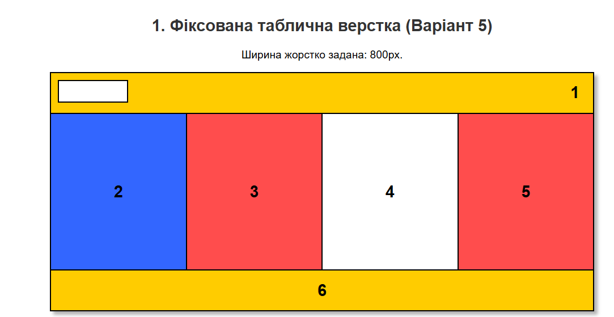
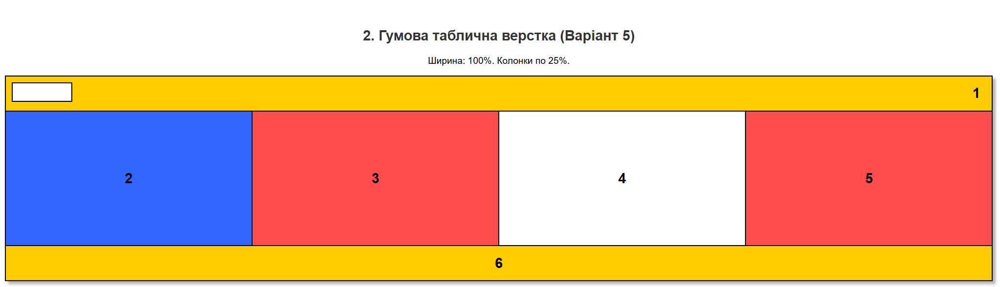
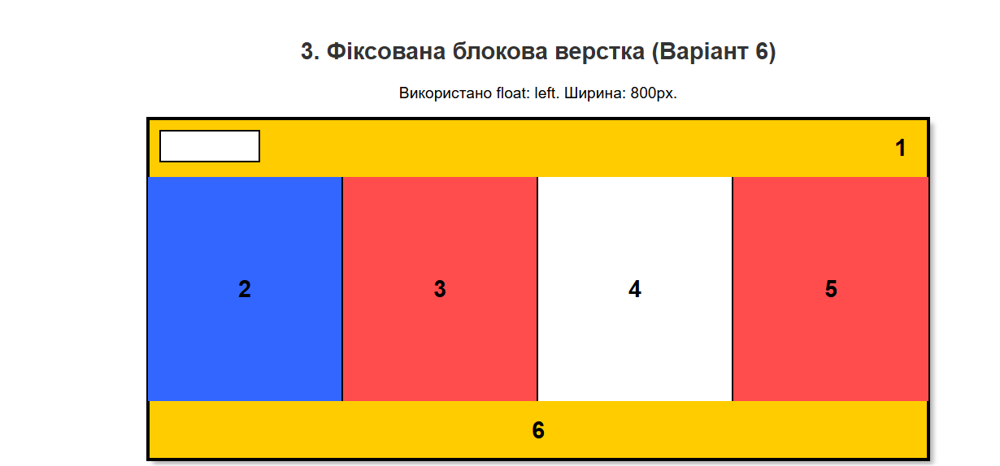
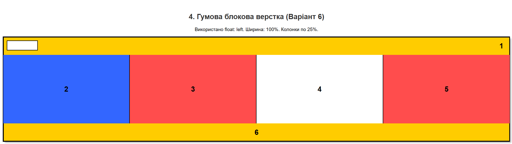

Тема, мета, місце розташування ЛР №3
Тема: ВЕРСТКА HTML-ДОКУМЕНТУ. БЛОКОВА ВЕРСТКА. ВЕРСТКА ЗАСОБАМИ CSS та FLEXBOX. АДАПТИВНА ВЕРСТКА. МЕДІА-ЗАПИТИ.
Мета: Придбати практичні навички верстки сторінок засобами CSS, верстки на основі плаваючих елементів, з'ясувати переваги та недоліки типів макетів веб-сторінок, придбати навички адаптивної верстки та роботи з FLEXBOX.
Місце розташування WEB-застосунку: Перейти на сайт
Місце звітного HTML-документа: Перейти на звіт
Репозиторій WEB-застосунку (код на GitHub): Перейти до репозиторію
Репозиторій звітного документа (код на GitHub): Перейти до репозиторію
Репозиторій інших завдань (код на GitHub): Перейти до репозиторію
Завдання №1 (Вдосконалення власного сайту)
Було розділено HTML та CSS по двох різних файлах. Застосовано адаптивний макет на основі технології Flexbox. Використано медіа-запити для планшетів та смартфонів, а також реалізовано компактне бургер-меню.
Відображення головної сторінки у браузері:

HTML-код (index.html):
<!DOCTYPE html>
<html lang="uk">
<head>
<meta charset="UTF-8">
<title>Платформа петицій</title>
<link rel="stylesheet" href="style.css">
</head>
<body>
<header>
<div class="header-left">
<img src="Книга.svg" alt="Логотип">
<h1>Платформа петицій</h1>
</div>
<div class="header-right">
<nav class="burger-menu">
<input type="checkbox" id="burger-toggle">
<label for="burger-toggle" class="burger-icon">☰</label>
<ul class="menu-links">
<li><a href="#">FAQ (Часті питання)</a></li>
</ul>
</nav>
</div>
</header>
<main>
<div class="main-layout">
<div class="left-column">
<!-- Контент категорій та таблиці петицій -->
</div>
<aside class="right-column sidebar">
<h3>Останні відповіді на петиції</h3>
</aside>
</div>
</main>
</body>
</html>
CSS-код (style.css - фрагмент Flexbox та медіа-запитів):
header {
display: flex;
justify-content: space-between;
align-items: center;
}
.main-layout {
display: flex;
gap: 40px;
}
.left-column { flex: 7; }
.right-column { flex: 3; }
@media (max-width: 992px) {
.main-layout { flex-direction: column; }
.right-column { width: 100%; }
}
@media (max-width: 768px) {
header { flex-direction: column; }
}
Завдання №2 (Таблична та блокова верстка)
Виконано розмітку за допомогою таблиці (Варіант 5) та плаваючих блоків (Варіант 6) — фіксовані та гумові макети.
Відображення макетів у браузері:




HTML-код виконання (фрагмент таблиці та блоків):
<!-- ФІКСОВАНА ТАБЛИЧНА ВЕРСТКА (Варіант 5) -->
<table style="width: 800px; border-collapse: collapse;">
<tr>
<td colspan="4" style="background-color: #ffcc00; height: 60px;">1</td>
</tr>
<tr style="height: 230px;">
<td style="background-color: #3366ff; width: 200px;">2</td>
<td style="background-color: #ff4d4d; width: 200px;">3</td>
<td style="background-color: #ffffff; width: 200px;">4</td>
<td style="background-color: #ff4d4d; width: 200px;">5</td>
</tr>
<tr>
<td colspan="4" style="background-color: #ffcc00; height: 60px;">6</td>
</tr>
</table>
<!-- ГУМОВА БЛОКОВА ВЕРСТКА (Варіант 6) -->
<div style="width: 100%; box-sizing: border-box;">
<div style="background-color: #ffcc00; height: 60px;">1</div>
<div style="height: 230px; width: 100%;">
<div style="float: left; width: 25%; height: 100%; background-color: #3366ff;">2</div>
<div style="float: left; width: 25%; height: 100%; background-color: #ff4d4d;">3</div>
<div style="float: left; width: 25%; height: 100%; background-color: #ffffff;">4</div>
<div style="float: left; width: 25%; height: 100%; background-color: #ff4d4d;">5</div>
</div>
<div style="clear: both; background-color: #ffcc00; height: 60px;">6</div>
</div>
Завдання №3 (FLEXBOX макет Варіант 5)
Відтворено дизайн-макет суто за допомогою технології Flexbox.
Відображення сторінки Flexbox у браузері:

HTML-код (task3.html):
<section class="skills-section">
<h2>ЩО ВИ ОПАНУЄТЕ?</h2>
<div class="skills-container">
<div class="skill-item">HTML/CSS</div>
<div class="skill-item">JAVASCRIPT</div>
<div class="skill-item">REACT</div>
</div>
</section>
<section class="guarantee-section">
<div class="flex-container single-column-content">
<div class="text-content">
<h3>МИ ГАРАНТУЄМО НАШИМ ВИПУСКНИКАМ ПРАЦЕВЛАШТУВАННЯ<br>
<span class="highlight">В НЕ ЗАЛЕЖНОСТІ ВІД ВІКУ</span></h3>
<div class="features-grid">
<div class="feature-item">
<h4>НАВІТЬ У ЗРІЛОМУ ВІЦІ</h4>
<p>В Україні поширений міф про те, що тільки молоді люди...</p>
</div>
</div>
</div>
</div>
</section>
<footer class="site-footer">
<div class="copyright">2021</div>
<div class="social-icons">
<div class="icon">f</div>
<div class="icon">vk</div>
</div>
</footer>
CSS-код (task3.css):
.skills-container {
display: flex;
justify-content: center;
gap: 30px;
flex-wrap: wrap;
}
.flex-container {
max-width: 900px;
margin: 0 auto;
display: flex;
flex-direction: column;
align-items: center;
}
.site-footer {
display: flex;
justify-content: space-between;
align-items: center;
}
@media (max-width: 768px) {
.features-grid { flex-direction: column; }
.feature-item { width: 100%; }
}
ВИСНОВКИ до ЛР №3
Під час виконання лабораторної роботи було здобуто практичні навички роботи з блоковою та табличною версткою. З'ясовано переваги гумових макетів (у відсотках) над фіксованими (у пікселях), оскільки вони краще адаптуються до розмірів вікна браузера. Успішно застосовано технологію Flexbox для створення гнучких сіток та вирівнювання елементів без використання застарілої властивості float. Впроваджено медіа-запити (@media) для створення повноцінно адаптивного інтерфейсу власного веб-застосунку під різні пристрої.